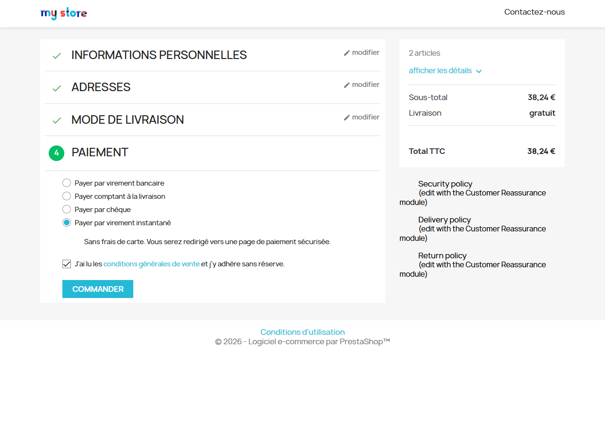
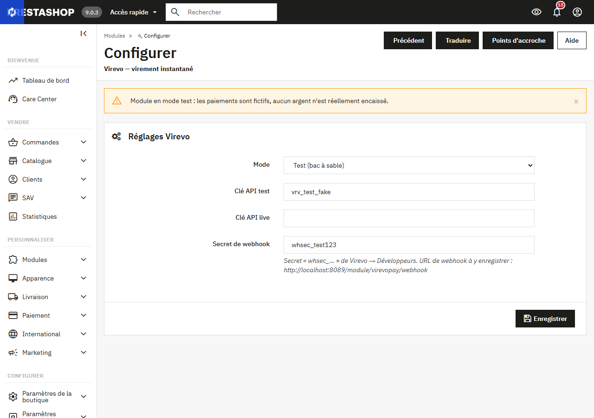
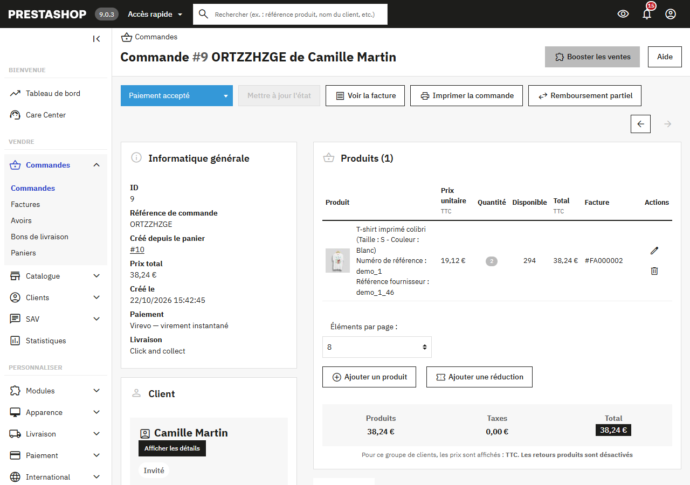
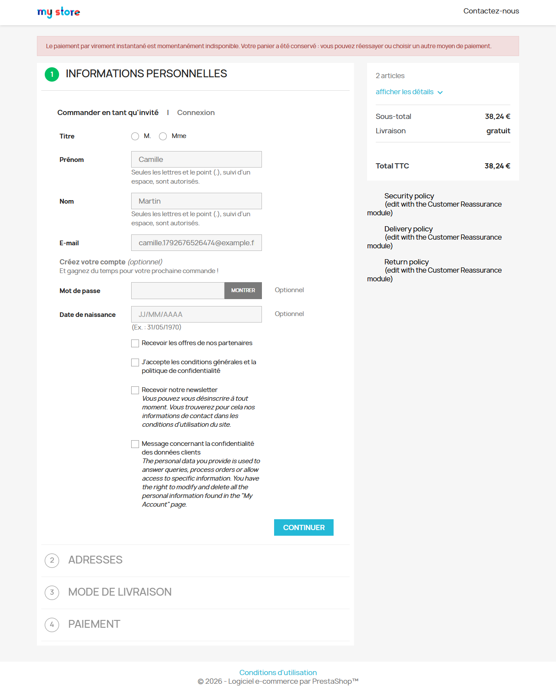

Module PrestaShop virevopay, version 0.6.2. PrestaShop 1.7.6 à 9.x.
Le module ajoute au tunnel de commande un moyen de paiement « Payer par virement instantané ». Le client choisit sa banque, valide le virement dans son application bancaire, et la commande passe d'elle-même en « Paiement accepté ». L'argent va directement du compte du client à votre IBAN : Virevo ne détient jamais vos fonds.

virevopay-0.6.2.zip. PrestaShop installe le module.
| Champ | À saisir |
|---|---|
| Mode | Test (bac à sable) pour essayer le module, Live pour recevoir de vrais paiements. |
| Clé API test | Votre clé commençant par vrv_test_, dans Virevo › Développeurs. |
| Clé API live | Votre clé commençant par vrv_live_, dans Virevo › Développeurs. Disponible une fois votre compte Virevo vérifié. |
| Secret de webhook | Le secret commençant par whsec_, dans Virevo › Développeurs. |
Sous le champ du secret, le module affiche l'URL de webhook de votre boutique. Copiez-la et enregistrez-la dans Virevo › Développeurs. Sans elle, les commandes restent « En attente de virement » alors que le client a payé.
Le moyen de paiement reste masqué aux clients tant qu'aucune clé d'API valide n'est saisie pour le mode choisi. La page de réglages vous avertit aussi quand le secret de webhook manque.
| Événement chez Virevo | État de la commande PrestaShop |
|---|---|
| Le client clique sur « Commander » | En attente de virement |
| Paiement reçu | Paiement accepté |
| Paiement refusé par la banque | Erreur de paiement |
| Paiement annulé ou expiré | Annulé (stock restitué) |
| Remboursement total | Remboursé |

Chaque webhook est vérifié par une signature HMAC-SHA256 et un horodatage, ce qui bloque les messages falsifiés ou rejoués.
Pour rembourser un client, créez un avoir sur la commande dans PrestaShop (remboursement partiel ou total). Le module transmet le remboursement à Virevo automatiquement.
Un remboursement fait directement dans votre compte Virevo est signalé sur la commande par un message privé, et la commande passe en « Remboursé » s'il couvre le total. Aucun avoir n'est créé dans ce cas : créez-le vous-même si vous en avez besoin, il ne déclenchera pas de second remboursement.
Si le paiement ne peut pas être créé (panne réseau, maintenance), la commande est annulée et son stock restitué. Le client retrouve son panier avec un message et peut réessayer ou choisir un autre moyen de paiement.

Seuls le montant, la devise, le numéro de commande et les adresses de retour de la boutique sont envoyés à Virevo. Aucune donnée personnelle du client ne transite par le module.
Dans Modules › Gestionnaire de modules, désinstallez le module. Ses réglages sont supprimés. Les commandes passées sont conservées avec leur état.
Posez vos questions par la messagerie de PrestaShop Addons, depuis la page du module.